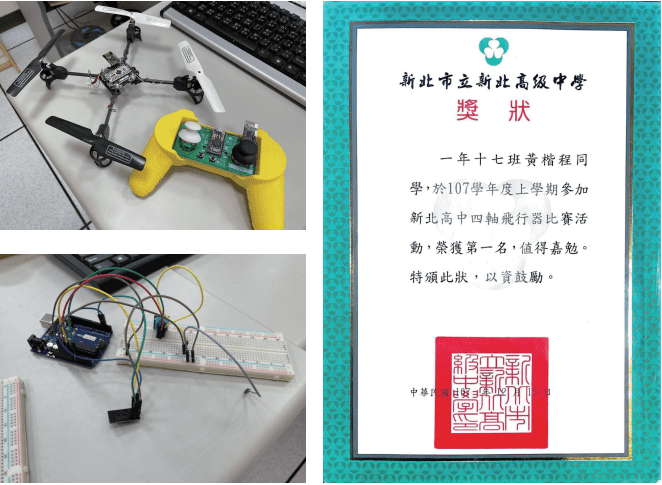

出生
學歷
專長興趣
志工服務記錄
幹部經歷
得獎榮譽
學習歷程
家庭經歷
我來自新北市三重區，一家五口生活，家裡的教育方式較為民主自由 ，有任何衝突一定是大家冷靜好好溝通，交換想法，這也造就我善於 聆聽以及表達對事的看法。我的父母從不會攔住小孩的興趣，我的大 姊擅長英文，走向補教業，我的二姊是美術班出身，也是往設計科系 發展，而我從小就喜歡玩電腦，國小就已接觸實況遊戲轉播平台，對 於電腦數位傳播有濃厚的興趣。
社團經歷及興趣
升上高中的我對音樂有極大的興趣，進而加入熱音社，一開始雖完全 不懂音樂，不僅練習彈奏時非常艱難我想要盡力做到最完美。玩樂團 使我更加懂得團隊合作及如何表達自我的想法越大的興趣，玩音樂的 我甚至狂熱到自己買了許多錄音設備，也在高中的這幾年自學了搖滾 樂團的基本樂器，努力將自己對於音樂最原始的想法傾訴於創作。除 了cover自己喜歡的樂曲片段且加以改編，也同時錄製畫面，剪輯成影 片，再將這些作品上傳到個人頻道上。
接觸資訊傳播的起因
從小興趣
國小的我喜歡玩電腦遊戲，也間接接觸到了網路傳播媒體，從那時網 路影音直播只是分享自己，當作娛樂的工具，到現在網路直播已然成 為網路上的新興產業，我也算是見證了網路直播的興盛轉變。國中的 我也有嘗試剪輯遊戲影片，雖沒有真正學習過，但靠著摸索及上網自 學，還是完成了不差的作品，也從剪輯中獲得了一些心得。
程式與物件的設計
高中的資訊科技概論課，有教導基本的程式語言C++，數值的運算以及 條件的判斷等，當時我對於程式語言相當好奇，高二選修我就毫不猶 豫選了Arduino設計課程。雖說這門課學習的東西沒有一般程式語言專 業，但對於像我這種入門的同學，已經很有幫助了。Arduino簡單來說 就是連接一套電路板，在電腦上編輯輸入，使得控制電路版上的裝置 ，例如燈泡、馬達、感應開關等。老師在課上教導練習重點，然後交 給學生自由運用，設計出屬於自己的電路，其中課堂上有額外學習組 裝無人機及編寫程式，最後舉辦四軸無人機比賽，用自己設計的無人 機，比賽速度，最後我獲得了第一名，也開啟我對程式及物件組裝的 興趣。
媒體應用的嘗試
高一和同學參加國家教育研究院愛學網系列徵集活動「校園微電影」 的徵稿，獲得高中職組佳作，第一次製作真人微電影，主題是志工服 務以及對社會的關懷，與同學們討論製作方向，同時加強了我的攝影 剪輯及溝通能力。
擔任畢業紀念冊美編
高三我自願擔任畢業紀念冊的美編，想藉此機會加強我的繪圖軟體能 力。
為什麼會選擇資傳
個人興趣
過去我曾嘗試過剪輯遊戲精華跟許多學校作業，且我對錄音混音及剪 輯有極大的興趣，在貴校資訊傳播科系裡有數位影音處理等相關課程 ，所以我想進入貴校擴展相關影音能力，學習增強更多這方面的技術 ，再結合自身音樂專業，將自己的影音製作技術提升。
專業能力培養
Arduino設計課程
愛學網「微電影」徵選擔任剪輯和攝影
自學錄音混音
資訊科技概論課程
剪輯影片
擔任畢業紀念冊美編
大學想學習
加強學習網頁設計、傳播理論等我較不熟悉的領域， 為未來的實作打 下基礎。加強英文能力，考取多益證書，資訊科系的軟體大多是以英 文為主，傳播方面未來工作也會需要英文溝通。積極參與音樂性社團 ，增廣人脈，保持對音樂的興趣。利用學校裡的專業設備，準備專題 ，結合自己的興趣專長，將過去所學應用在實作上。加強實習經驗， 以便未來畢業就職較易接軌。
畢業後
我會考慮剪輯或後製的方向就業，踏入社會工作後，期間仍然會接收 日新月異的資訊傳播科技。
特殊經歷
音樂錄音製作
自從高中接觸熱音社之後，我開始想要將自己的樂器紀錄下來，錄製 音樂再配上影像，經過簡單的剪輯後，上傳到個人的頻道，整理紀錄 這些作品。憑著一股熱愛下，我買了錄音設備，也開始學習混音軟體 。以錄製樂器來講，我認為樂器的音色調整是最基本的，聲音頻率的 分配，基本就掌握了樂曲的方向。 這個暑假也想要深入加強錄音混音的知識，希望未來可以應用到資訊 傳播類的影音部份。參加熱音社，與同學團隊合作練習音樂，在樂團 裡非常需要溝通，溝通各段落的分配，而且音樂特別抽象，溝通需要 具體，這樣的練習使我的表達能力有s大大的進步，可以盡可能地講出 具體的東西。
社團表演

辦活動及表演讓我變得外向，不怕與人交談，也懂得基本辦活動的企 劃流程，現場對突發事件的應變處理。首次參加團隊製作影片，我擔 任攝影及剪輯，影片主題是聚焦在「社會關懷」議題，希望能鼓勵大 眾多關懷身心不便之人、流浪動物等。這是我第一次拍攝與剪輯完整 的影片，一邊拍攝我便一邊構思剪輯方向，最終獲得高中職組佳作， 讓我對做影片多了一些信心。
國家教育研究院愛學網「校園微電影」 青春的試煉
首次參加團隊製作影片，我擔任攝影及剪輯，影片主題是聚焦在「社 會關懷」議題，希望能鼓勵大眾多關懷身心不便之人、流浪動物等。 這是我第一次拍攝與剪輯完整的影片，一邊拍攝我便一邊構思剪輯方 向，最終獲得高中職組佳作，讓我對做影片多了一些信心。
Arduino設計課程
高二選修Arduino設計，是第一次深入學習資訊設計相關的課程，這門 課不像一般死板板的學習寫程式，利用Arduino的設計網頁，設計電路 板使裝置運作，讓我對於小物件的資訊設計有些許概念。最後一個課 程要自己動手組裝無人機，並且將無人機上的電路板重新編寫，做好 的無人機與和其他同學比賽速度，比賽過程有許多人的無人機有突發 狀況，我算是少數穩定飛行的，最後拿下第一名。
個人剪輯遊戲影片
這兩部遊戲剪輯影片是國中的成品，也是我第一次接觸剪輯軟體，完 全是因興趣所做，當時很喜歡看國外的Youtuber做這樣的遊戲剪輯， 將遊戲中無厘頭的片段剪接，放上網路流行的梗及特效，對遊戲裡的 人物吐槽等。我用Adobe Premiere Pro剪輯，剛製作時，完全什麼都不 會，對著網路上的講解功能，我邊摸索各種功能，將物件隨時間移動 旋轉、去背影片及圖片等，終於完成這兩部影片，也學到剪輯軟體一 些基本常識，雖說品質沒有多好，但對我來說，第一次因興趣而做， 是很重要的經驗。其中我多是利用音樂的節奏變化，搭配特效做轉場 和場景，我認為音樂節奏的走向大大決定影片的氛圍。
畢業紀念冊美編
高三擔任畢冊美編，我的美術繪畫一直都不太好，而未來大學是有機 會接觸到繪圖軟體的，想利用這次畢冊製作，熟悉繪圖軟體的操作， 也為自己的高中生活留下紀念。